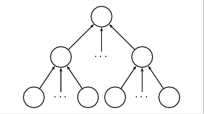

Dado que los Sistemas de Computación con palabras aceptan números difusos como entradas y salidas válidas, podemos concatenar varios de estos sistemas. Con está idea proponemos construir Redes como la que se muestra en la figura 1.1.
Figura 1.1:
Redes de Sistemas de Computación con Palabras
|  |
Se trata de una red orientada hacia adelante, que puede organizarse en capas; la salida de un determinado nodo puede ser la entrada de otro nodo de capas más adelante (no necesariamente de la capa siguiente). Cada nodo contiene un sistema de computación con palabras asociado, y las señales que conectan nodos son Números Difusos.
Las reglas de evaluación de la red son las siguientes
- Cualquier Nodo de la red puede definirse como una entrada o una salida del sistema.
- Si un Nodo se define como Salida, ésta será cualquiera de las salidas válidas de los Sistemas de Computación con palabras.
- Si un Nodo se define como Entrada, ésta será cualquiera de las entradas válidas de los Sistemas de Computación con palabras.
- Si un Nodo no recibe señales de ningún otro nodo, debe definirse como Entrada del sistema.
- Si un Nodo se define como Entrada del sistema, su valor será la entrada actual. En caso contario, su valor será la salida del Sistema de Computación con palabras asociado al nodo
Oscar Duarte
2005-05-01